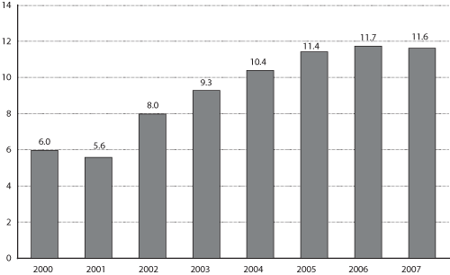

Excel | CSV | Table Version
Millions of container units of all sizes)
SOURCE: U.S. Department of Transportation, Research and Innovative Technology Administration, Bureau of Transportation Statistics, based on data from U.S. Department of Homeland Security, Customs and Border Protection, Mission Support Services, Operations Management Database.